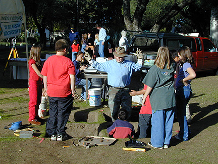

Project assistant Chris Dudzik describes the history of archaeological
research conducted by the CSUMB Institute of Archaeology at Old Mission
San Juan Bautista. On this day, Chris, Harvey, and a host of other
community volunteers and teachers assisted in coordinating an "excavation
day" for student visitors from San Juan Elementary.